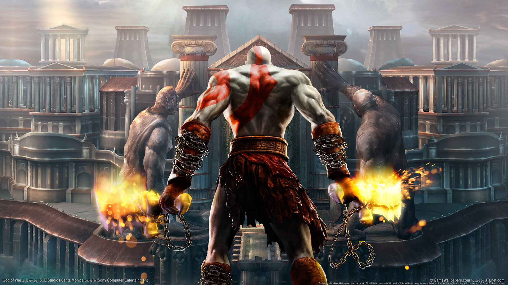

wallpapers são imagens de alta resolução feitas para decorar o papel de parede de seu computador ou celular.
com uma pequena pesquisa no google você pode achar diversos wallpaper com o tema que vc quise
a lista e grande! mas aqui a alguns temas que voçê pode pesquisar
para quem gosta de jogos a variedade e grande, e se tem um que goste basta pesquisa wallpaper com o nome de seu jogo favorito, voçê sempre ira achar
a procura por wallpapers de anime e grande devido ao sucesso que as animações japones tem proporcionado durante os anos
nao importa qual seja seu anime sempre terar um wallpaper dele.
assim como os tema de cima tambem se basea em wallpaper de filmes não importa seu genero de filme sempre vai aver um


e para voce que gosta de paisagens basta pesquisar so wallpapers de natureza, aonde ira mostra diversos lugares.


link abaixo ira te redirecionar para pagina do google
clique aqui